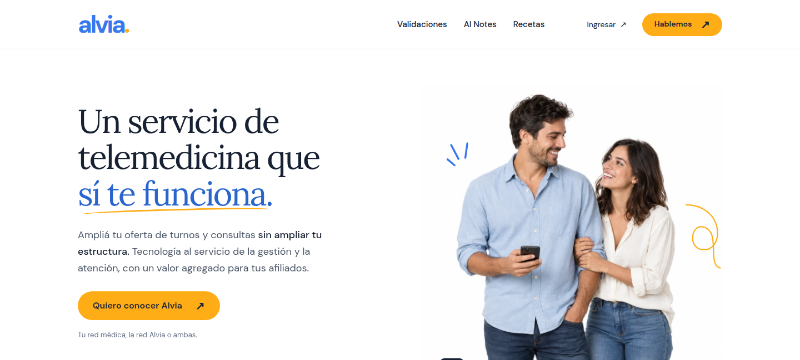
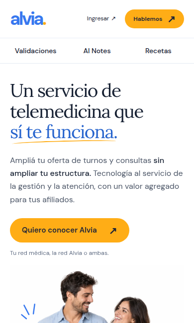
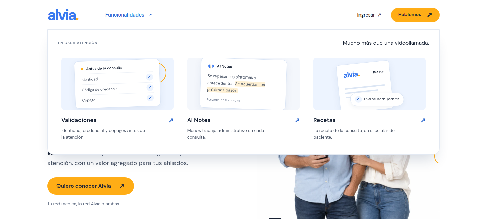
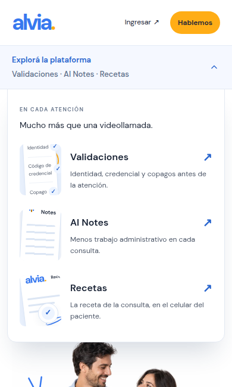
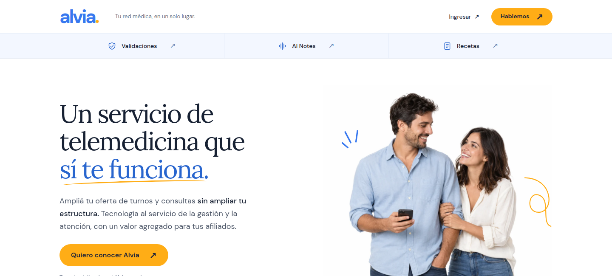
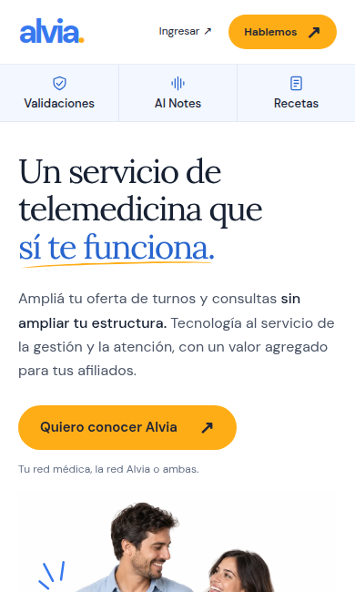
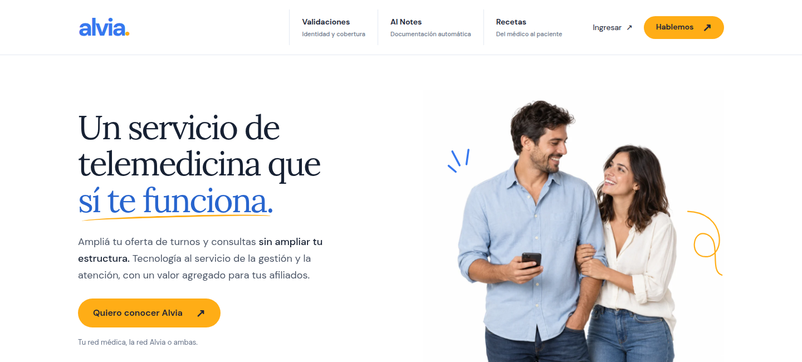
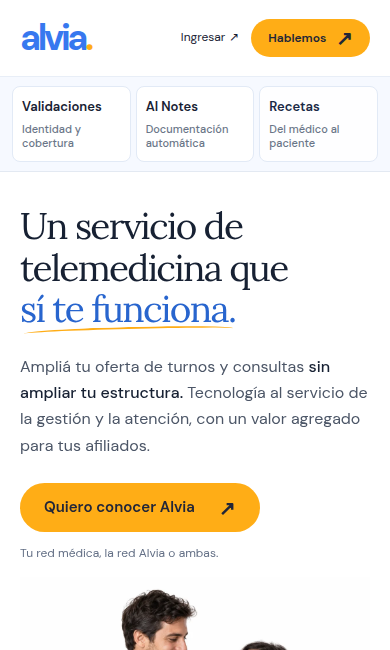

01
Probar opción 1 Accesos directos
Más compacto

Las tres funcionalidades a la vista, a un clic. En mobile se mantienen en una fila fija, sin abrir un menú.
Validaciones, AI Notes y Recetas en el header. Mismo sitio, cuatro formas de entrar.


Las tres funcionalidades a la vista, a un clic. En mobile se mantienen en una fila fija, sin abrir un menú.


Un menú con una explicación y una vista previa de cada funcionalidad. Deja espacio para crecer.


Una segunda fila dedicada a las funcionalidades. Siempre visibles, también en el celular.


Cada acceso cuenta para qué sirve. Ayuda a entender AI Notes antes de entrar.
Mocks navegables sobre la V5 actual · Desktop y celular · Septiembre 2026